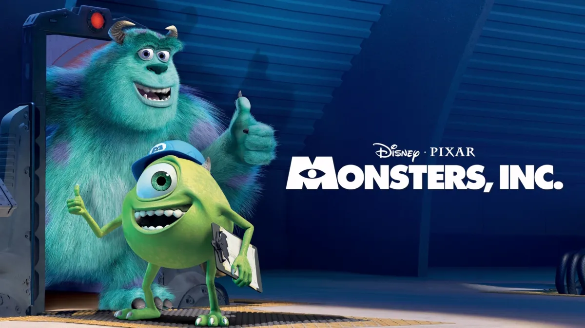
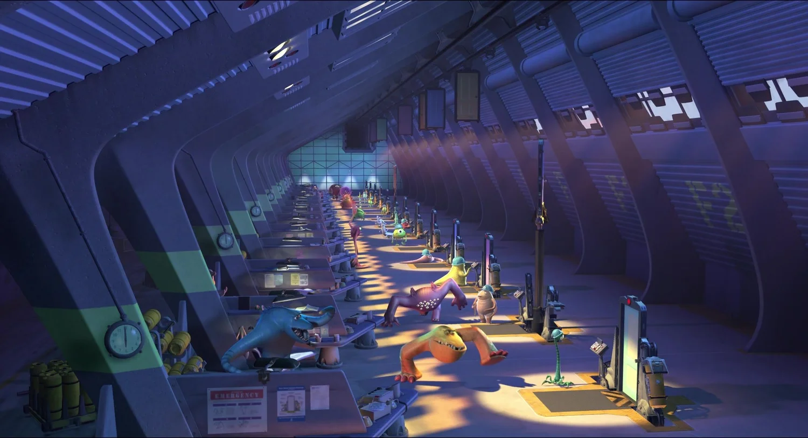
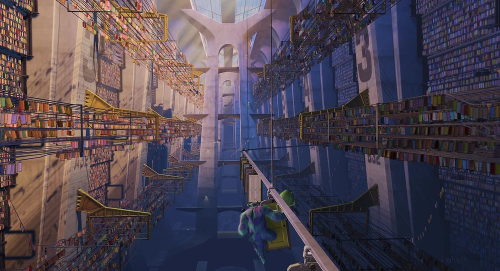

Monsters, Inc. is an energy company that was founded in 1810 as Amalgamated Monsters Ltd. before taking on its current name in 1895. Its main duty is to provide all citizens in Monstropolis with energy in the form of captured screams collected from children. They accomplish this by crossing into the human world through door technology, portals connected to closets of children's bedrooms, and scaring them to the best of their ability. The screams are then collected in special canisters for use as energy.
The factory is an immense facility equipped to fulfill the needs of its employees. Scaring takes places in chambers called "Scare Floors", where the monsters cross over into the human world with the doors. Each scarer has an assistant to help coordinate the energy collection. Any door belonging to a child who has no fear of monsters is promptly destroyed in the Door Shredder, as their screams cannot be collected and are therefore obsolete.
Strict safety rules are in place to prevent any problems between the two worlds. If anything goes wrong with a door or an unauthorized object passes through, procedures are immediately followed to contain the situation. The system is carefully controlled so that only approved doors are used, and efficiency is constantly monitored to meet energy demands.
If a child is no longer afraid of monsters, their door becomes useless for energy collection and is sent to the Door Shredder for disposal. While unusual, this process is part of keeping Monstropolis powered and running efficiently, as scream energy remains the city’s main source of electricity.


